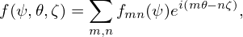
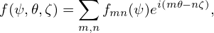

Consider the Jacobian of the form
|
| (437) |
where m and n are arbitrary integers which can be appropriately chosen by users, μ0 and R0 are constants included for normalization. In the iterative metric method of solving ï¬xed boundary equilibrium problem, we ï¬rst construct a coordinates transformation (𝜃,ψ) → (R(𝜃,ψ),Z(𝜃,ψ)) (this transformation is arbitrary except for that surface ψ = 1 coincides with the last closed flux surface), then solve the GS equation in (𝜃,ψ) coordinate system to get the value of Ψ at grid points, and ï¬nally adjust the value of (R(𝜃,ψ),Z(𝜃,ψ)) to make surface ψ = const lies on a magnetic surface. It is obvious the Jacobian of the ï¬nal transformation we obtained usually does not satisfy the constraint given by Eq. (437) since we do not use any information of Eq. (437) in the above steps. Now comes the question: how to make the transformation obtained above satisfy the constraint Eq. (437) through adjusting the values of 𝜃? To make the constraint Eq. (437) satisï¬ed, 𜃠and ψ should satisfy the relation
![[R (𝜃,ψ )]m
𝒥 (𝜃,ψ) = μ ------- ψn,
R0](tokamak_equilibrium569x.png) | (438) |
which
Â
Â
Using Eq. (), we obtain
∫
0𝜃d𜃠= ∫
0𝜃d𜃠 m m
|
 | (439) |
normalized to 2π, the normalized 𜃠is written as
 | (440) |
Â